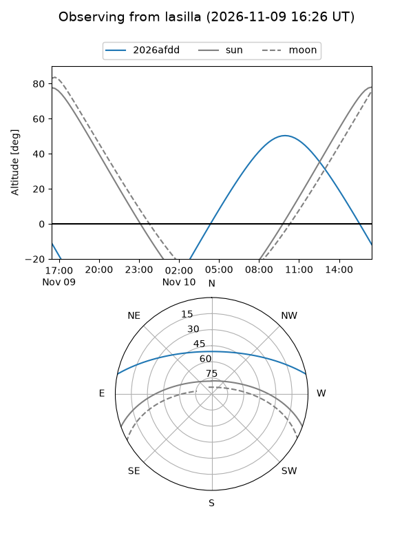
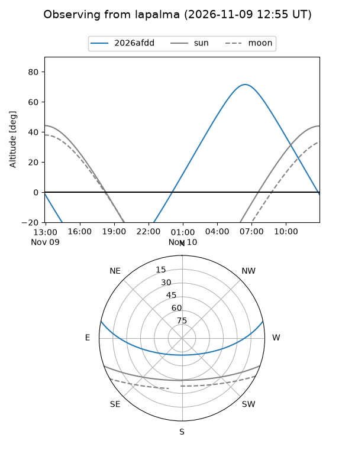
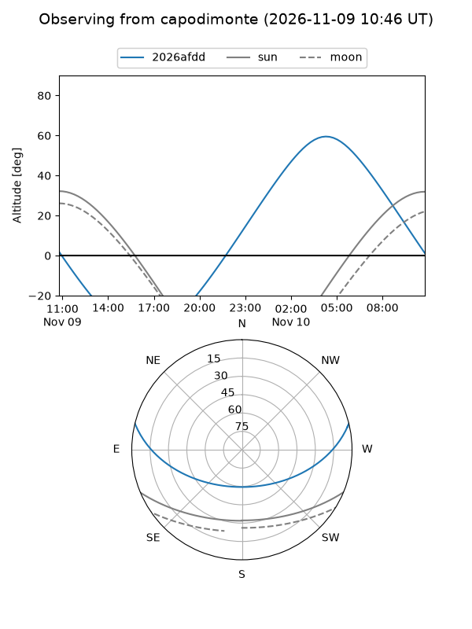
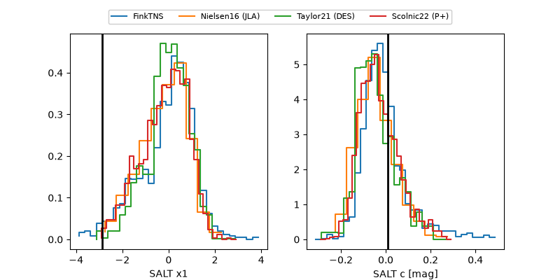

2026afdd
Target 2026afdd at 2026-11-09 14:25
Aliases and brokers:
FINK-ZTF: ztf.fink-portal.org/ZTF26acbfgbm
Lasair-ZTF: lasair-ztf.lsst.ac.uk/objects/ZTF26acbfgbm
ALeRCE-ZTF: alerce.online/object/ZTF26acbfgbm
YSE-PZ: ziggy.ucolick.org/yse/transient_detail/2026afdd
TNS name: wis-tns.org/object/2026afdd
Direct TNS query: direct search
alt names
ZTF26acbfgbm (ztf,fink_ztf)
2026afdd (tns,yse)
ATLAS26mnf (atlas)
Coordinates:
equatorial (ra, dec) = 127.7081,+10.45875
equatorial (HMS+DMS) = 08:30:49.94,+10:27:31.51
galactic (l, b) = (214.6569,+26.77916)
Flags:
peak dt: +14.5
Photometry:
last ztfg=19.91, ztfr=19.22
6 ztfg, 4 ztfr detections
Lightcurve
Visibility



Additional plots
